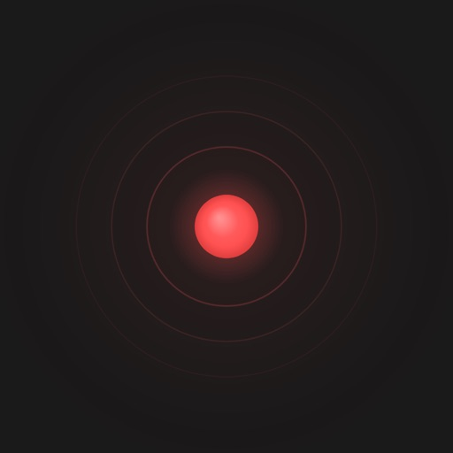
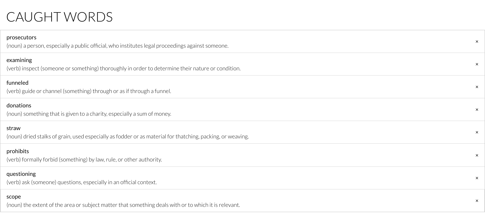
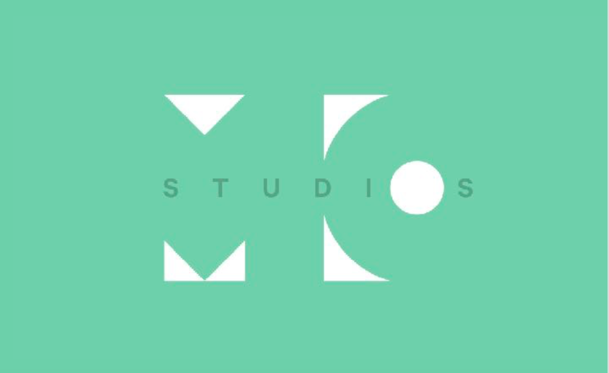

iOS app · Available on the App Store
Pulse
Discover NYC events on a live map. Browse by category and time, explore nearby events, and share community reports.
Opens the App Store in a new tab.Apps, personal tools, and earlier work.

iOS app · Available on the App Store
Discover NYC events on a live map. Browse by category and time, explore nearby events, and share community reports.
Opens the App Store in a new tab.Personal tool
A dashboard I built with AI to turn daily email updates into organized information and next steps.

Browser extension · 2018
A Chrome extension for looking up and saving words. Built with students at Girls Who Code.

Visual design
A selection of logos, presentation decks, posters, and editorial layouts.
Algorithms · 2018
A Java algorithm that uses minimax game theory to solve Mastermind efficiently.
Research & writing · PDF
A paper on key moments in the history and legacy of the Turing Test.
I’m a software engineer at Meta working on Applied AI, including AI-assisted engineering, coding-agent evaluation, and product prototyping. Previously, I worked on privacy infrastructure and API migrations, as well as VR and spatial interfaces.
I’m based in Brooklyn and interested in public transit and urbanism. I play ultimate frisbee, padel, and volleyball, and I love building things.
Jan–Dec 2021
Software Engineer Intern
Built iOS app and backend features at an early-stage driving technology startup.
Jun–Aug 2019
Software Engineering Intern
Built backend tools to automate application onboarding to data-monitoring services.
Jun–Aug 2018
Teaching Assistant
Helped teach Python, robotics, web development, and data science, and guided students’ final projects.